FBAL TV
Aftermovie 2025
Suivez le festival
Site officiel du festival
festivaldebiarritz.com
Radio
Écouter la radio
Radio Campus · en direct
Playlist 2026
Les invités
Appuyez sur une bulle pour découvrir l'invité·e
Favoris
Hashtag du festival
#fbal
Partagez vos photos avec ce tag
Boutique du festival
Tote bag, gourde, affiche...
Disponible sur BilletWeb
Billetterie
Acheter mes billets
Découvrez les lieux du festival

Comment venir à Biarritz
Hôtels partenaires
Restaurants partenaires
Partenaires du festival
FBAL app · v6.3